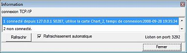
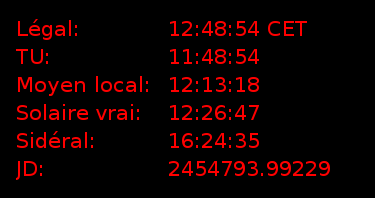

Agrandit la fenêtre CdC pour remplir l'écran. L'affichage des bares d'outils, de menu, d'état, des ascenseurs et de la barre des menus ne change pas. Un nouveau clic rétabli la taille d'origine de la fenêtre. La touche F11 joue le même rôle.
Un clic sur cette entrée fait basculer les couleurs de la carte entre l'affichage normal et l'affichage de nuit :
fond noir, nuances de rouge pour les grilles, étiquettes et autres marques, icônes des barres d'outils de la couleur définie dans Configuration > Affichage > Couleurs d'affichage.
Sous WINDOWS VISTA, la couleur de fond du bureau passe au gris moyen.
Montre un sous-menu composé de ces entrées :
Etablit ou annule l'affichage des barres de défilement pour déplacer la carte. Vous pouvez déplacer la carte dans sa fenêtre sans ces barres par différents moyens :
 Montre l'état des connexions TCP/IP aux clients de CdC, vous pouvez les réinitialiser une par une ou choisir la réinitialisation automatique.
Il est aussi possible de fermer une connexion par un clic droit sur une ligne.
 Montre une fenêtre avec des informations sur l'heure courante. Il montre les éléments suivants:
Divise le champ de vision par deux. L'icône Zoom+ de la barre principale a le même effet.
Vous pouvez aussi modifier le champ de vision avec la roulette de la souris.
Multiplie le champ de vision par deux. L'icône Zoom- de la barre principale a le même effet.
Vous pouvez aussi modifier le champ de vision avec la roulette de la souris.
{kind=link}
{kind=link}
{kind=link}